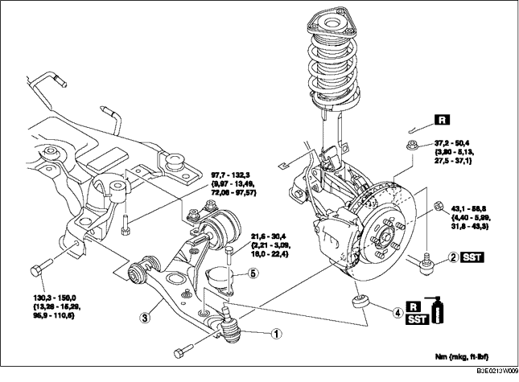

1. Gemäß der Reihenfolge in der Tabelle ausbauen.
2. Der Einbau erfolgt in umgekehrter Reihenfolge.
3. Die Achsgeometrie prüfen und ggf. einstellen. (Siehe VORDERACHSGEOMETRIE.)

.
|
1
|
Kugelgelenk des unteren Vorderrad-Querlenkers
|
|
2
|
Kugelgelenk, Spurstangenkopf
|
|
3
|
Vorderer unterer Querlenker
|
|
4
|
Staubmanschette
|
|
5
|
Schwingungsdämpfer
|
1. Die Zentrierschraube des Motorlagers Nr. 1 herausdrehen. (Fahrzeuge mit LF-Motoren)
2. Den Motor und das Getriebe etwas zur Vorderseite des Fahrzeugs schieben. (Fahrzeuge mit LF-Motoren)
3. Die Schraube des unteren Hinterrad-Querlenkers ausbauen.
4. Den unteren Querlenker ausbauen.
1. Das Fett vom Traggelenkbolzen abwischen.
2. Neue Staubschutzmanschette mit Fett füllen.
3. Die Manschette mit dem SST auf das Traggelenk aufpressen.
4. Überschüssiges Fett abwischen.
1. Den unterer Vorderrad-Querlenker provisorisch einbauen.
2. Das Motorlager Nr. 1 einbauen. (Fahrzeuge mit LF-Motoren)
3. Die Schraube des unteren Hinterrad-Querlenkers festziehen.
4. Die Schraube des unteren Vorderrad-Querlenkers festziehen.
5. Die Mutter festziehen (Kugelgelenk des unteren Vorderrad-Querlenkers).